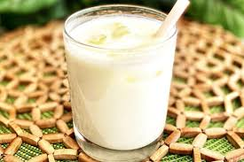

Indian Lassi

Description :
Learn what a lassi drink is with this basic recipe for the popular Indian beverage. You can adjust the amount of yogurt or water for a thicker or thinner consistency. Garnish with fresh mint if desired.
Ingredients
- ice cubes
- 1 ¾ cups plain yogurt
- 1 ½ cups ice water
- 6 cubes ice, crushed
- 2 teaspoons white sugar
- 1 pinch salt
Directions
Fill 6 tall glasses with ice cubes. Place yogurt, ice water, crushed ice, sugar, and salt in a blender; blend until frothy. Pour over ice cubes in the glasses to serve.
Home